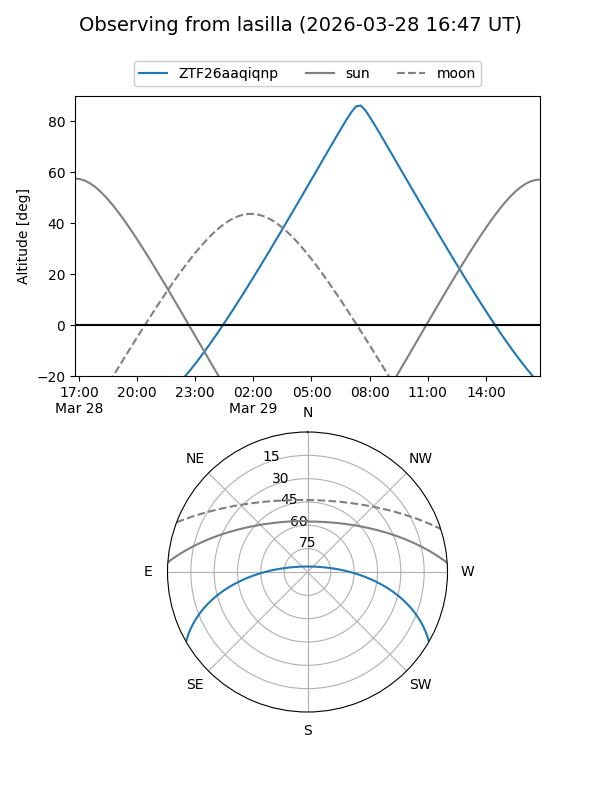
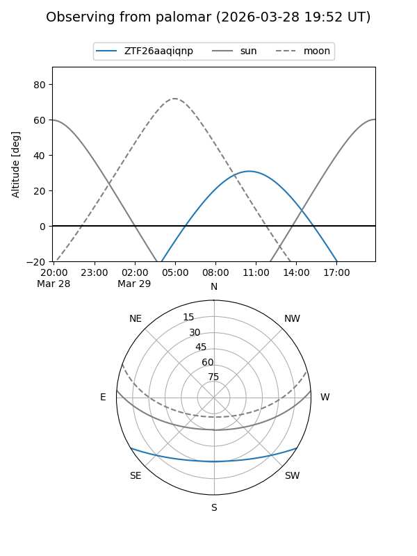

ZTF26aaqiqnp
Target ZTF26aaqiqnp at 2026-03-29 13:18
Aliases and brokers:
FINK: link
Lasair: link
ALeRCE: link
alt names
ZTF26aaqiqnp (ztf,fink_ztf)
Coordinates:
equatorial (ra, dec) = 227.4078,-25.62347
equatorial (HMS+DMS) = 15:09:37.88,-25:37:24.50
galactic (l, b) = (338.1819,+27.62963)
Flags:
Photometry:
last ztfg=17.08, ztfr=16.12
1 ztfg, 1 ztfr detections
Lightcurve
Visibility


Additional plots